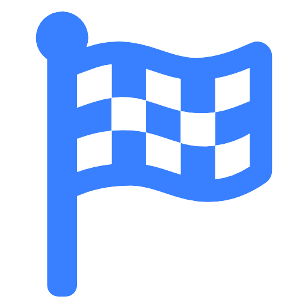

<ion-header>
  <ion-toolbar>
    <ion-buttons slot="start">
      <ion-back-button color="dark" defaultHref="create-game"></ion-back-button>
    </ion-buttons>
    <ion-title>{{ "CreateGame.titleCreateGameVirtualList" | translate }}</ion-title>
    <ion-buttons slot="end">
      <ion-button color="dark" (click)="navigateToOverview()">
        <ion-icon name="save"></ion-icon>
      </ion-button>
    </ion-buttons>
  </ion-toolbar>
</ion-header>

<ion-content class="ion-padding">

  <ion-card color="light">
    <ion-card-content>
      <ion-text>{{ "CreateTasks.combineTasks" | translate }}</ion-text>
      <ion-list mode="ios" *ngIf="game">
        <ion-reorder-group
          (ionItemReorder)="doReorder($event)"
          [disabled]="!reorder"
        >
          <ion-item
            color="light"
            class="item-text-wrap"
            lines="none"
            *ngFor="let task of game.tasks; index as i"
          >
            <ion-avatar
              class="flag"
              slot="start"
              *ngIf="task.category.includes('nav')"
            >
              
            </ion-avatar>
            <ion-avatar slot="start" *ngIf="task.category.includes('theme')">
              <div class="mymarker invisible"></div>
            </ion-avatar>
            <ion-avatar slot="start" *ngIf="task.category.includes('info')">
              <div class="mymarker invisible"></div>
            </ion-avatar>
            <ion-chip
              *ngIf="task.category.includes('nav')"
              color="primary"
              (click)="presentTaskModal('nav', task)"
            >
              <ion-label>
                <ion-icon name="navigate"></ion-icon> {{ task.name }}
              </ion-label>
            </ion-chip>
            <ion-chip
              *ngIf="task.category.includes('theme')"
              color="secondary"
              (click)="presentTaskModal('theme', task)"
            >
              <ion-label>
                <ion-icon name="clipboard"></ion-icon> {{ task.name }}
              </ion-label>
            </ion-chip>
            <ion-chip
              *ngIf="task.category.includes('info')"
              color="warning"
              (click)="presentTaskModal('info', task)"
            >
              <ion-label>
                <ion-icon name="information-circle-outline"></ion-icon>
                {{ "CreateTasks.information" | translate }}
              </ion-label>
            </ion-chip>
            <ion-icon
              *ngIf="!reorder"
              slot="end"
              name="close"
              (click)="deleteTask(task._id)"
            ></ion-icon>
            <ion-reorder *ngIf="reorder" slot="end"></ion-reorder>
          </ion-item>
        </ion-reorder-group>
      </ion-list>
    </ion-card-content>
  </ion-card>

  <ion-card color="light">
    <ion-card-content>
      <ion-text
        >{{ "CreateTasks.chooseComponents" | translate }}
        <ion-icon
          name="information-circle"
          (click)="showPopover($event, 'Klicke die Felder an, um mehr über die Aufgabentypen zu erfahren.')"
        >
        </ion-icon>
      </ion-text>
      <ion-item color="light" lines="none" *ngIf="game">
        <ion-chip color="primary" (click)="presentTaskModal('nav')">
          + <ion-icon name="navigate"></ion-icon>
        </ion-chip>
        <ion-chip color="secondary" (click)="presentTaskModal('theme')">
          + <ion-icon name="clipboard"></ion-icon>
        </ion-chip>
        <ion-chip color="warning" (click)="presentTaskModal('info')">
          + <ion-icon name="information-circle-outline"></ion-icon>
        </ion-chip>
        <ng-container *ngIf="game.tasks && game.tasks.length > 1">
          <ion-chip
            color="dark"
            slot="end"
            *ngIf="!reorder"
            (click)="toggleReorder()"
          >
            <ion-icon name="reorder-three"></ion-icon>
          </ion-chip>
          <ion-chip
            color="dark"
            slot="end"
            *ngIf="reorder"
            (click)="toggleReorder()"
          >
            <ion-icon name="close"></ion-icon>
          </ion-chip>
        </ng-container>
      </ion-item>
    </ion-card-content>
  </ion-card>
  
</ion-content>